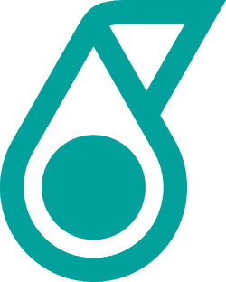
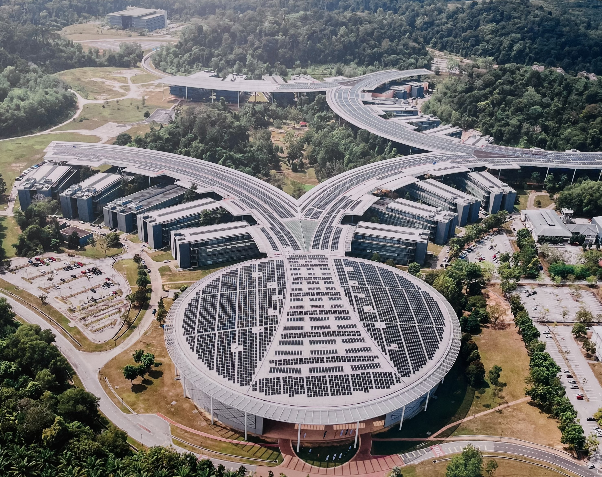
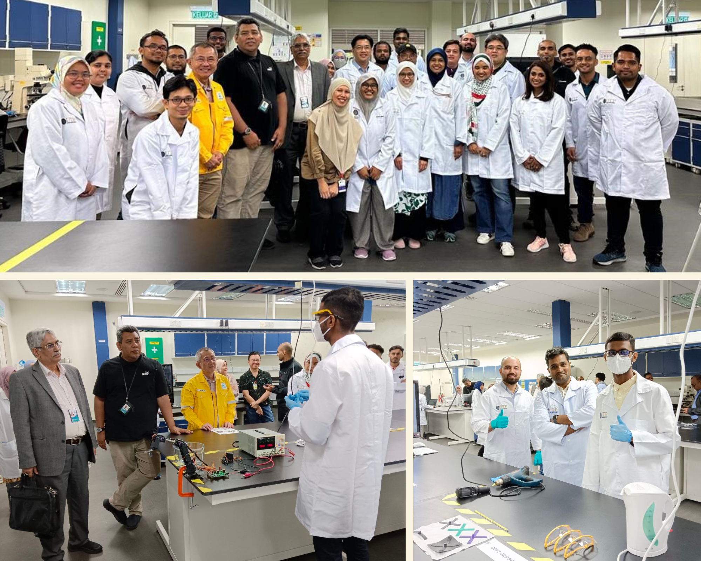

Petronas future positioning project
Shape Memory Technology (Smart Materials)


Shape memory effect refers to the capability of a material to recover its original shape when the right stimulus such as heat, moisture, light is applied. During my term as a Research Officer at UTP, I was selected to be part of Petronas Future Positioning Project geared towards sustainability, aiming to attain net-zero carbon emissions by 2050. My team and I was working on soft robotics, morphing solar panels, breathable garments and medical implants where shape memory technology was applied.
The pictures above were taken during our presentation with Petronas Chief Scientists, Dr. Mohd Faizal, Dr. Raj Tewari and Dr. Chee Phuat Tan at UTP’s Research and Development (R&D) Building where we presented our team’s research findings. I was tasked to present my work on soft grippers where I was working on the gripping mechanism using shape memory polymers (SMP) which will then be attached to a robotic arm. I successfully engineered and constructed a functional prototype of a soft gripper using 4D printing technology. This gripper demonstrated the capability to grasp and elevate objects weighing 50 times its own mass, showcasing a key benefit of utilizing Shape Memory Polymers (SMP) compared to traditional techniques.